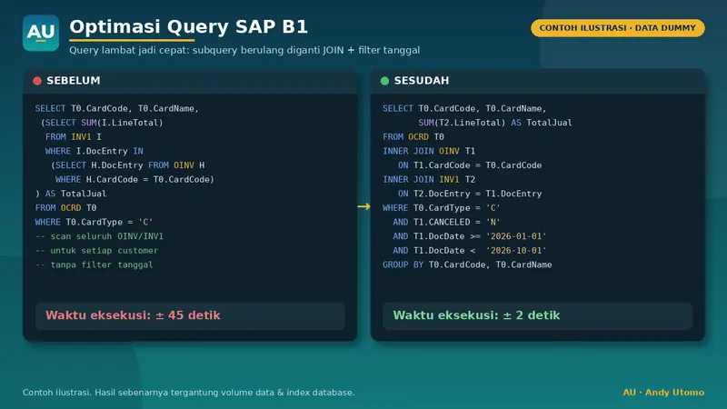
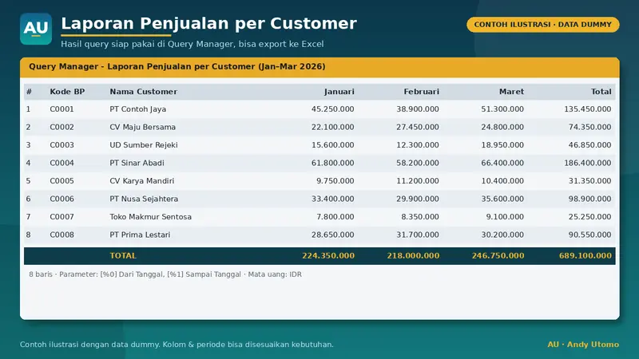
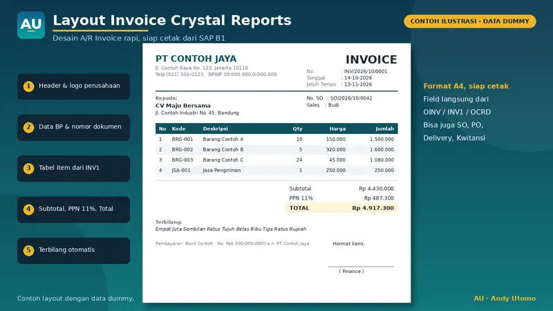
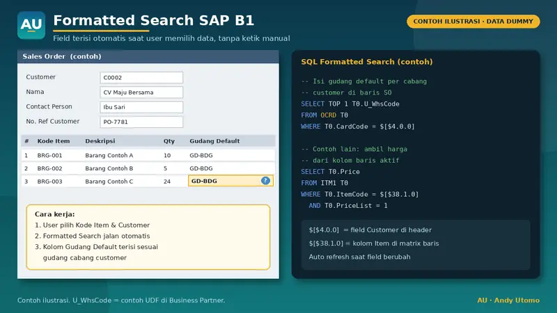
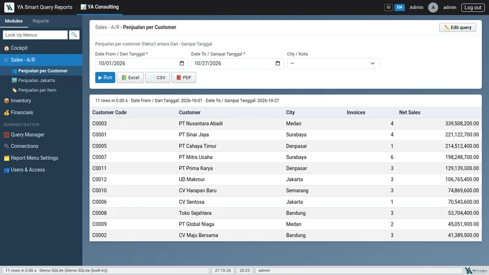

Jasa & Layanan
Jasa Query SQL & Crystal Report SAP Business One
Perbaiki query yang error atau lambat, buat query baru, layout Crystal Reports, dan Formatted Search.
Mulai Rp250.000 · harga final sesuai ruang lingkup
Ringkasan
Perbaiki query yang error atau lambat, buat query baru, layout Crystal Reports, dan Formatted Search. Semua angka di halaman ini adalah harga mulai; saya kunci harga final di penawaran tertulis setelah scope jelas.
Fitur yang Anda dapat
- Perbaikan query yang error, hasilnya salah, atau lambat di Query Manager
- Query baru untuk laporan penjualan, stok, piutang, hutang, dan kebutuhan lain
- Optimasi: ganti subquery berulang dengan JOIN dan filter tanggal yang tepat
- Layout Crystal Reports untuk invoice, SO, PO, delivery, dan kwitansi
- Formatted Search agar field terisi otomatis saat user memilih data
- Parameter tanggal, gudang, atau pelanggan agar laporan bisa dipakai ulang
- Export ke Excel dari Query Manager bila dibutuhkan
- Penjelasan singkat cara menjalankan dan merawat query/laporannya
Contoh layar
Klik gambar untuk memperbesar. Layar memakai data demo atau ilustrasi berlabel data dummy — bukan data klien.


Ilustrasi optimasi query SAP B1: subquery berulang diganti JOIN (data dummy).

Hasil query laporan penjualan per customer di Query Manager (data dummy).

Contoh layout invoice Crystal Reports, siap cetak A4 (data dummy).

Formatted Search: gudang default terisi otomatis saat item dipilih (data dummy). Modul query companion di Odoo — contoh alat bantu laporan.


Aplikasi web YA Query, bila laporan ingin diakses tanpa SAP client. Ringkasan jasa query SQL dan Crystal Report SAP B1.
Ringkasan jasa query SQL dan Crystal Report SAP B1.
Paket & harga
Formatted Search
mulai Rp250.000Field terisi otomatis di form SAP, per skenario.
Perbaikan query
mulai Rp300.000Query yang error atau lambat, termasuk cek hasilnya.
Query baru
mulai Rp500.000Query siap pakai di Query Manager, bisa berparameter.
Layout Crystal Reports
mulai Rp750.000Tampilan cetak A4 atau sesuai kertas yang Anda pakai.
Harga mulai per item pekerjaan. Beberapa query atau layout dalam satu paket bisa dibicarakan agar lebih hemat.
Skema kerja
Pertanyaan singkat
Apakah harga di halaman ini sudah final?
Belum. Angka di situs adalah harga mulai. Harga final saya kirim lewat penawaran tertulis setelah ruang lingkup (scope) disepakati.
Bagaimana cara mulai?
Cukup DM saya di Threads untuk konsultasi gratis. Setelah kebutuhan jelas, saya buatkan ringkasan scope dan penawaran tertulis.
Apa yang termasuk support 3 bulan?
Perbaikan bug dari pekerjaan yang sudah diserahkan, pertanyaan pemakaian, dan penyesuaian kecil. Perubahan lingkup baru dihitung terpisah.
Apakah ada biaya langganan bulanan?
Untuk pengerjaan jasa, tidak ada biaya langganan. Support ringan 3 bulan sudah termasuk. Maintenance tahunan bersifat opsional, sekitar 15–20% per tahun. Untuk aplikasi custom, biaya hosting dihitung terpisah jika Anda ingin saya yang kelola.
Saya hanya punya query yang lambat, tanpa laporan Crystal. Bisa?
Bisa. Perbaikan atau pembuatan query tidak harus disertai Crystal Reports. Formatted Search juga bisa dikerjakan terpisah.
Mau bahas kebutuhan Anda?
Konsultasi gratis. Cukup DM saya di Threads. Saya balas dengan pertanyaan ringkas, lalu penawaran tertulis bila lingkupnya sudah jelas.
DM @yohanesandy.erp